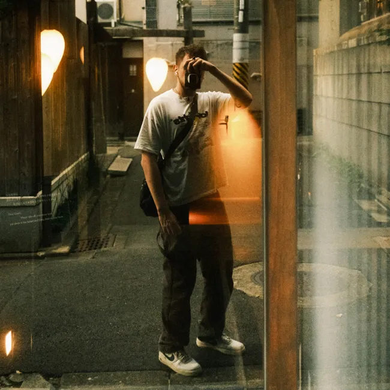
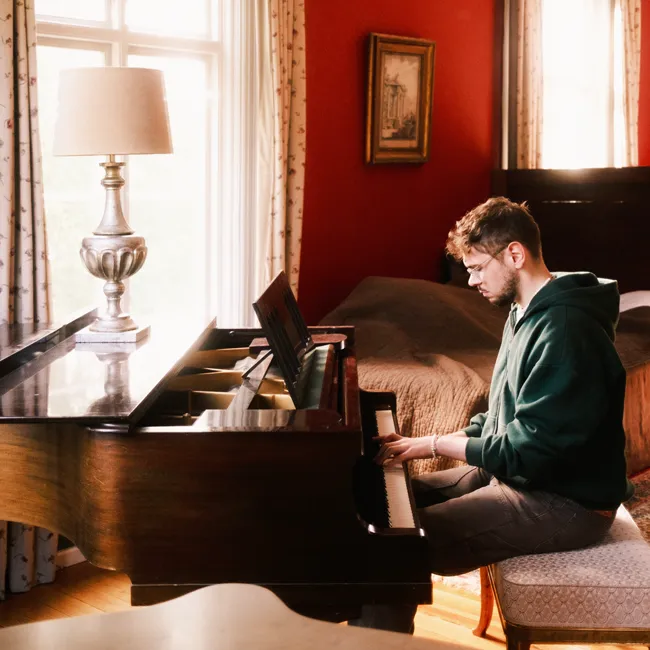
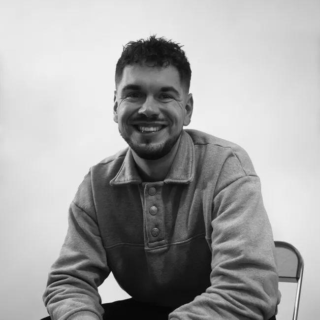

Profil
Was mich als Mensch und Designer ausmacht.




Hi, ich bin Tobias
Als UX/UI Designer ist es mein Ziel komplexe Probleme in einfache und intuitive Erlebnisse zu verwandeln. Design zeichnet sich für mich dadurch aus, dass es nicht nur eine intuitive Usability bietet, sondern auch einen hohen Joy of Use schafft.
Angetrieben von Neugier und dem Wunsch, jeden Tag dazuzulernen, suche ich die Zusammenarbeit mit tollen Menschen und die Herausforderung in spannenden Projekten. Hier kann ich meine Kreativität voll entfalten.
Angetrieben von Neugier und dem Wunsch, jeden Tag dazuzulernen, suche ich die Zusammenarbeit mit tollen Menschen und die Herausforderung in spannenden Projekten. Hier kann ich meine Kreativität voll entfalten.

Rheinische Hochschule Köln
Master of Arts, User Experience Design
Abschlussnote: 1,6
Master-Thesis: Optimierung der User Experience von Scan & Go mittels Loyalitätsmechaniken
Sep. 2023 – Aug. 2025
Rheinische Hochschule Köln
Bachelor of Arts, Mediendesign
Abschlussnote: 1,5
Sep. 2020 – Aug. 2023
Erfahrung
UX/UI Designer
Blockception Ltd. in Londonderry · Selbstständig
Gestaltung eines Produkt-Analyse Tools im B2B Kontext
Aufbau eines UI-Kits (Design Tokens, Farben, Typografie und Komponenten)
Jan. 2024 – Jetzt
Selbstständig
Start als Motion- & Grafikdesigner, seit 2024 Spezialisierung auf UX/UI-Design
Zusammenarbeit mit Agenturen und Kunden aus dem KMU- und Einzelunternehmensbereich
Nov. 2017 – jetzt
UX/UI Designer
REWE digital in Köln · Werkstudent
Redesign der Scan & Go Landingpage
Einführung eines Lottie-Animations-Workflows inklusive Dokumentation
Überarbeitung der Auswertung von Scan & Go Kundenfeedback, um Insights zu gewinnen und neue Features zu identifizieren
Jan. 2024 – Aug. 2025
Mein Ausgleich
Wenn ich nicht am Computer sitze, beschäftige ich mich in meiner Freizeit mit Klavierspielen und der Fotografie. Besonders letzteres tue ich gerne, um Momente festzuhalten. Sei es im Urlaub, auf Konzerten oder im alltäglichen Leben. Die Fujifilm X100V ist dabei ein ständiger Begleiter in meinem Leben.